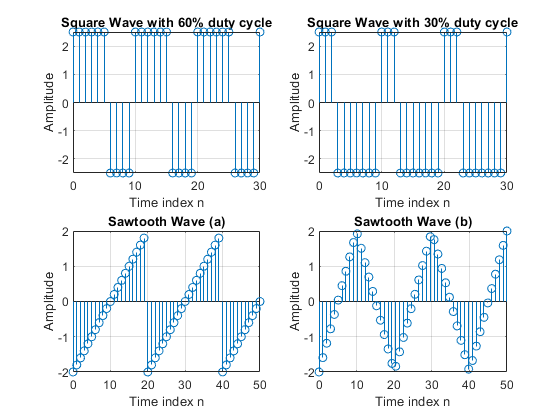
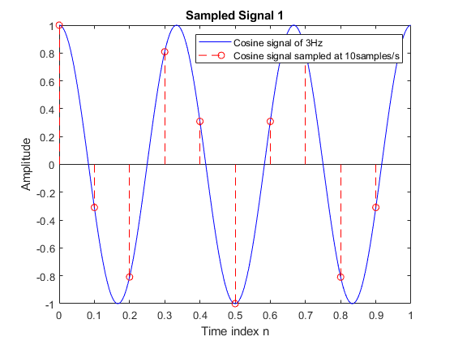
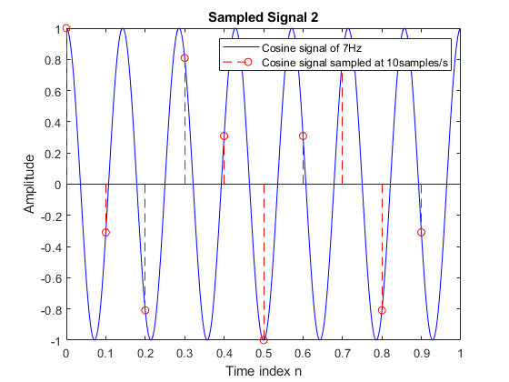

Pratik Ravikumar Sanghavi (2017AAPS0394G)
Contents
Problem Statement 1: Generation of waveforms for square wave and the sawtooth wave
Program Initialization
clc;
clear all;
close all;
Square Wave with 60% duty cycle
Variable initialization
t=linspace(0,6*pi,31);
y1=2.5.*square(t,60);
Square Wave with 30% duty cycle
Variable initialization
y2=2.5.*square(t,30);
Sawtooth Function with a ramp characteristic
Variable Initialization
t1=linspace(0,5*pi,51);
y3=2.*sawtooth(t1);
Sawtooth wave with a triangular characteristic
Variable initialization
t2=linspace(0,5*pi,50);
y4=2.*sawtooth(t2,1/2);
Plot Generation
figure(1);
subplot(2,2,1);
stem(5*t/pi,y1);
title('Square Wave with 60% duty cycle');
xlabel('Time index n');
ylabel('Amplitude');
grid on;
subplot(2,2,2);
stem(5*t/pi,y2);
title('Square Wave with 30% duty cycle');
xlabel('Time index n');
ylabel('Amplitude');
grid on;
subplot(2,2,3)
stem(10*t1/pi,y3);
title('Sawtooth Wave (a)');
xlabel('Time index n');
ylabel('Amplitude');
axis([0 50 -2 2]);
grid on;
subplot(2,2,4)
stem(10*t2/pi,y4);
title('Sawtooth Wave (b)');
xlabel('Time index n');
ylabel('Amplitude');
axis([0 50 -2 2]);
grid on;

Problem Statement 2:Sampling of sinusoidal waveform
Program Initialization
clc;
close all;
Cosine Wave of 3Hz
Variable Declaration
fsig1=3;
tsig=0:1e-3:1-1e-3;
y5=cos(2*pi*fsig1*tsig);
n=0:9;
Ts=0.1;
ysamp5=cos(2*pi*fsig1*n*Ts);
Cosine Wave of 7Hz
Variable Declaration
fsig2=7;
y6=cos(2*pi*fsig2*tsig);
n=0:9;
Ts=0.1;
ysamp6=cos(2*pi*fsig2*n*Ts);
Plot Generation
figure(2);
plot(tsig,y5,'b-');
hold on
stem(n*Ts,ysamp5,'r--o');
title('Sampled Signal 1');
xlabel('Time index n');
ylabel('Amplitude');
legend('Cosine signal of 3Hz','Cosine signal sampled at 10samples/s');
figure(3);
plot(tsig,y6,'b-');
hold on
stem(n*Ts,ysamp6,'r--o');
title('Sampled Signal 2');
xlabel('Time index n');
ylabel('Amplitude');
legend('Cosine signal of 7Hz','Cosine signal sampled at 10samples/s');
 
Verification of sequences
disp(ysamp5);
disp(ysamp6);
error=abs(ysamp5-ysamp6);
if error<1e-7
fprintf('The sequences generated by sampling a 3Hz and 7Hz at 10samples/s are equal and agree with theoretical predictions\n');
else
fprintf('Error in sequence generation\n');
end
Columns 1 through 7
1.0000 -0.3090 -0.8090 0.8090 0.3090 -1.0000 0.3090
Columns 8 through 10
0.8090 -0.8090 -0.3090
Columns 1 through 7
1.0000 -0.3090 -0.8090 0.8090 0.3090 -1.0000 0.3090
Columns 8 through 10
0.8090 -0.8090 -0.3090
The sequences generated by sampling a 3Hz and 7Hz at 10samples/s are equal and agree with theoretical predictions